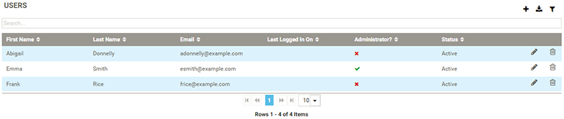
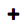
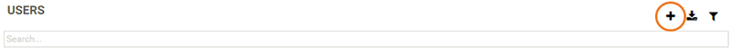

Tip: You must have administrator permissions to manage users and groups.
You can access the Users page from the Administration menu on the left of the screen. From the Users page, you can manage existing users and add new users:

| Icon | Description |
|---|---|
|
 |
Add a new user, see Creating new users. |
|
Edit user information, see Editing or deleting users. |
|
|
Remove a user from the system, see Editing or deleting users. |

Tip: When adding a user, you must complete the above default fields. You can then also add custom fields of your own choosing, for example, you may wish to add a field for the user’s job title or their telephone number, see Defining fields on asset types.
The Users page lists all active and inactive users on the system.
See also Managing groups.